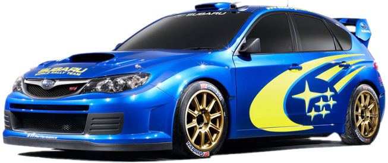

Full Service Olsztyn to profesjonalny serwis samochodów japońskich, koreańskich, zachodnich, francuskich, włoskich oraz serwis auto klimatyzacji.
Nasza firma działa na rynku od lat. Specjalizujemy się w samochodach japońskich oraz zachodnich. Zapewniamy wysokiej jakości części do naprawy. Pomożemy Państwu uporać się z usterkami klimatyzacji w samochodzie. Szybko zdiagnozujemy każdą usterkę i naprawimy ją. Posiadamy wysokiej klasy sprzęt do diagnostyki komputerowej, laserowego pomiaru i regulacji geometrii kół oraz do badania amortyzatorów.
Pomagamy naszym Klientom przygotować samochód do rejestracji.
Twoje auto wyjedzie od nas w bardzo dobrym stanie.
Jesteśmy uczciwi i rzetelni.
Możecie zdać się na naszą wiedzę i doświadczenie.
Zapraszamy do zapoznania się z ofertą naszych usług.
Oferujemy bezpłatną wymianę oleju!